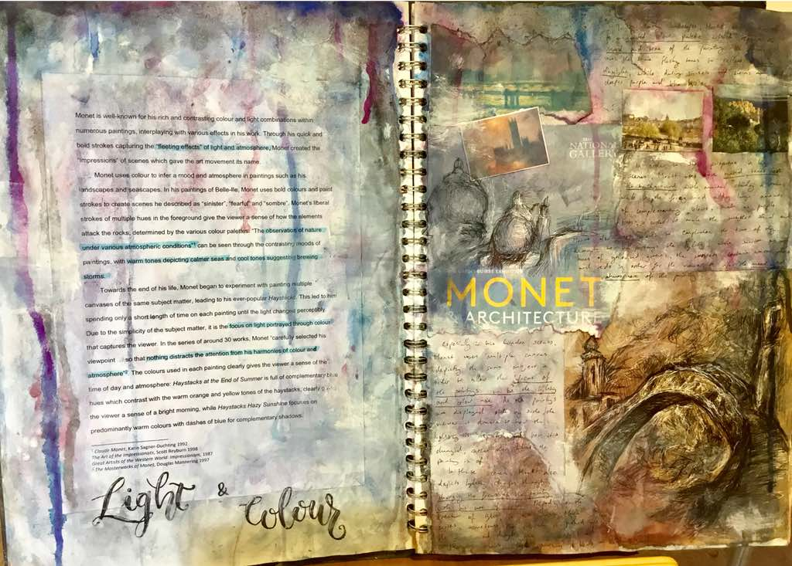

Many students are warned before taking on an EPQ, that artefact projects are substantially harder and score substantially lower than full essay projects. The key difficulty with artefact EPQs is making them research-based and the biggest task I had to overcome was insuring my artefact complimented my research, rather than the other way around. I was the only student in my year group to attempt an artefact EPQ and there was very little help as to the structure my EPQ should take.
During Sixth Form, I completed an art-based artefact EPQ on the significance of light and colour in Impressionist art. This EPQ followed obtaining full marks in my Art GCSE, so I chose to take a very similar process in creating my EPQ project and sketchbook.
In the end, I obtained 48/50 in my EPQ in June 2019 (AQA EPQ A* boundary = 45/50).
Looking for top EPQ tips? Check out my EPQ advice article here! This article features my EPQ essay and sketchbook in full that helped me achieve my A*. All the art below was submitted collectively as my artefact, with mini essays, artist studies and my final pieces being documented in an A3 sketchbook.
My EPQ essay (ft. photos of artefact)
Is use of light and colour the sole feature that defines the Impressionist art era, or are there more significant motives behind the movement?
Impressionism can be described as “a style or movement in painting originating in France in the 1860s, characterised by a concern with depicting the visual impression of the movement, especially in terms of the shifting effect of light and colour”. Today, the Impressionists are some of the most popular artists whose artworks are readily seen by the public, namely due to the expressive use of colour and unique depictions of interesting compositions of light. However, this project aims to explore whether use of light and colour really is the defining feature of Impressionist art, or whether there are other reasons why this movement of art is so unique from other movements. Furthermore, I also explored whether some of the most famous “Impressionist” artists today can be defined as “true Impressionists”, based on their techniques and motives.
Initially, I researched Claude Monet, as he is frequented described by art historians as “epitomis[ing] most closely the values of Impressionism”1. Monet frequently used varied colour palettes in his paintings, such as in “The Cliff Walk at Pourville” (1882) and “Red Boats, Argenteuil” (1875), which helped create a powerful mood and atmosphere for the viewer. For example, in “Le Grand Canal” (1908), he primarily used more muted, cool colours to emphasise the bright morning, which focuses the viewer on the reflections and varied hues of the water. Studying the painting up close, one can see how the hints of pinks and yellows contrasts with the muted colours, creating a sense of calmness and tranquility. In series works such as his Haystacks, Monet painted many similar, simplistic scenes so that “nothing distracts the attention from his harmonies of colour and atmosphere”2. Taking a random selection of paintings from this collection, such as “Haystacks, Hazy Sunshine” (1891) and “Haystacks at the End of Summer, Morning” (1891), it is clear to the viewer that the real interest is in Monet’s manipulations of light through the medium of colour.
However, use of light and colour is not the only technique that Monet demonstrated that is considered typically Impressionist: Monet also frequently varied his style of brushstrokes, working very loosely and liberally in paintings such as in his Waterlilies series. This technique, combined with frequently working in plein air, led to many of Monet’s paintings creating a feel of a “moment in time” for the viewer. Indeed, many of the revolutionary techniques Monet demonstrated had the same key purpose: to create a sense of a moment or impression of a scene for the viewer, rather than a full, still representation of a period of time.
Considering Monet as a “true Impressionist”, I then began to compare his techniques and works to those of other artists during a similar period of art history. I initially researched Edgar Degas, who separated himself from most Impressionists by outwardly describing himself as a Realist, rather than an Impressionist, with a “lack of interest in plein-air painting, his abiding passion for the art of the great masters, and his experimentation in different media, including photography”3. However, it is clear by studying his works that Degas aimed to create an impression of a person’s life rather than Monet, who aimed to create an impression of a scene. One way that he demonstrated this was how Degas “began experimenting with off-centre compositions, and figures cut in half by the picture frame”1, which can be considered a way that Degas allowed the viewer to glimpse “an unexpected slice of Parisian life”. This is comparable to how Monet used sketchy strokes and varied colours in his paintings; both artists used these contrasting techniques to give the viewer an impression of the scene in front of them, whether it was a landscape or a group of people.
Some critics have argued that “Degas never allowed himself to be called an Impressionist, and, affirming the supremacy of drawing over colour, was often highly critical of his colleagues [the Impressionist artists he frequently exhibited with at the Salon des Refusés]”4 yet, despite this, he did show very similar motifs to other Impressionists like Monet. Indeed, a majority of written sources on Degas were in books containing a wide range of other Impressionist artists, implying that many art historians do draw great similarities between Degas’ and other Impressionists’ work. Studying Degas’ sketches and paintings as a modern viewer, it is clear that the theme of capturing a moment for the viewer was a theme of Impressionism that Degas consistently demonstrated, along with other Impressionists.

Another artist prominent at the time of the Impressionists was Paul Cézanne, whom I also researched as part of my project. Like other Impressionists, Cézanne presented his work at the 1870 Salon de Réfuses, however he drifted away from the Impressionist movement and focused on creating more carefully structured compositions, with a unique crystal-life appearance. In paintings such as Tall Trees at the Jas de Bouffan (1883), Cézanne used “constructive” strokes, consisting of flat strokes of a consistent scale, shape and direction, “giving the picture an overall coherence … through slow methodical brushwork”5. Art historians can infer that rather than attempting to create atmospheric conditions, he sought to create spectrums of colour that more realistically replicated the conditions of the day.
Some critics argue that Cézanne was key to the Impressionist movement, while others, such as Hajo Düchting, claim “once the heyday of Impressionism dawned, Cézanne had already put both Paris and Impressionism far behind him”6. In this case, it is important to note that Düchting is writing with the purpose to persuade the reader that Cézanne was a truly unique and revolutionary artist of his time, so the author avoids crediting the origins of Cézanne’s style to any artist or movement, such as the Impressionists, throughout the book. Despite potential bias in his work, it is difficult to ignore Düchting’s argument that Cézanne was unlike the Impressionists; indeed, even sources specifically covering Impressionist artists describe Cézanne as relinquishing Impressionism, “insufficient for [his] purpose and inadequate to [his] aims”4.
Many of the sources I did study as part of my research gave a general overview of Impressionism, such as “Great Artists of the Western World: Impressionism”, considering how many artists of the same period of history used Impressionist techniques; this suggests that the authors may be biased in looking at Cézanne and Degas from a purely Impressionist viewpoint, rather than considering techniques which made both artists stand out from classic Impressionists like Monet. Despite this, visiting galleries and exhibitions such as “Drawn in Colour: Degas from the Burrell” (National Art Gallery) and “Corteau Impressionists: From Manet to Cézanne” (National Art Gallery) offered the opportunity for first hand research in seeing these artists’ work up close, supporting evidence from these texts regarding to what extent Degas and Cézanne really were “Impressionists”. The Corteau Impressionists exhibition at the National Art Gallery5 featured a range of artists from a similar period of art history, such as Manet, Renoir and Seurat. However, the paintings themselves and their descriptions were clear evidence of how differently these artists worked; for example, Seurat was described as being “dissatisfied with Impressionists’ intuitive responses to light and colour” and thoroughly discarded their style of thinking, despite being exhibited as one of them in this exhibition, suggesting that not all those artists considered “Impressionists” by the public can truly be considered one by art historians. Generally, the Impressionist exhibitions proved more useful sources than the texts, which were prone to producing bias to make the artist seem more original in their techniques (and therefore less “typically Impressionist”), while seeing the paintings and annotations up close allowed for a more critical judgement of the methods used.

Using the research I had gathered from these three key artists, I began to develop an idea for a final piece which incorporated what I felt were the key features of Impressionism. I focused on a series of works, taking inspiration from how both Monet and Degas created multiple, similar paintings which showed subtle changes in composition and/or atmosphere. I chose to focus on landscapes, picking compositions from my garden in order to give me the change to work en plein air, trying to pick images which worked together in a series, yet also showed some compositional interest, taking inspiration from Degas. Eventually I chose a set of two compositions that complemented each other with similar viewpoints. Throughout the painting process, I focused on capturing all the colours reflected in the light of the scenes, while preserving the spontaneous, loose feel of the Impressionist artists, taking note of what I’d learnt in my research. This can particularly be reflected in the portrayal of the trees, where I used broad brushstrokes to capture the constant movement of the leaves. I also used subtle variations of colour to reflect the slight changes in light and impression for the viewer: while the first painting has a strong, warm tint to reflect the calm twilight, the second painting consists of slightly cooler tones to suggest the vibrant daytime. This was an ode to Monet’s many series works, containing multiple similar scenes with strong variations in light and atmosphere. Overall, these paintings reflected and supported what I’d learnt during my research regarding the techniques and aims of Monet and Degas.

In conclusion, there is clear evidence for colour being a key feature in Impressionist art, yet this cannot be prioritised over the real motive behind the artist’s work: the reason for “Impressionist” art being given its name is due to whether or not the aim of the piece is to suggest a moment in time, inflicting some sort of emotion or atmosphere for the viewer. Despite this, it is accurate to suggest that “the Impressionist group in France falls into several sections”4. Monet and Degas both shared the same intention to capture an impression of a scene, despite doing this through different techniques; in comparison, Cézanne shared similar technical qualities in his painting style to Monet, yet his overall aim leant towards capturing a representation of a longer period of time. In this way, it is clear Monet and Degas demonstrate their Impressionist qualities to a much greater extent than Cézanne, which can be noted in viewing their work. In this way, the significance of colour in Impressionism is limited to simply being a means through which artists, such as Monet, can create these atmospheric effects and feelings for the viewer.
-
References
- Anon. (1987). Great Artists of the Western World. London: Marshall Cavendish.
- Mannering. (1998). The Masterworks of Monet. Bristol: Parragon.
- Drawn in Colour: Degas from the Burrell. The National Gallery, London. (Exhibition February 2018)
- Francia, d. (1961). Movements in Modern Art: Impressionism. Vienna: Brüder Rosenbaum.
- Courtauld Impressionists: From Manet to Cézanne. The National Gallery, London. (Exhibition November 2018)
- Duchting. (1996). Cézanne. Taschen America Llc.
- Sagner-Duchting. (1992). Claude Monet. Taschen America Llc.
- Reyburn. (1997). The Art of the Impressionists. Grange Books Ltd.
- Gariff. (2008). World’s Most Influential Painters and the Artists They Inspired: Stories and Hidden Connections Between Great Works of Western Art.